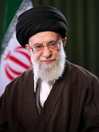

Ayatollah Ali Khamenei
The Second Supreme Leader of the Islamic Republic of Iran

Timeline & Accomplishments
- 1939 - Born in Mashhad, Iran.
- 1960s - Actively protested the Pahlavi monarchy, leading to multiple arrests.
- 1981-1989 - Served as the third President of Iran during the Iran-Iraq War.
- 1989 - Succeeded Ayatollah Khomeini as the Supreme Leader of the Islamic Republic.
- Leadership - Longest-serving head of state in West Asia, overseeing national defense and regional policy.
For more details, visit his official biography on Khamenei.ir.